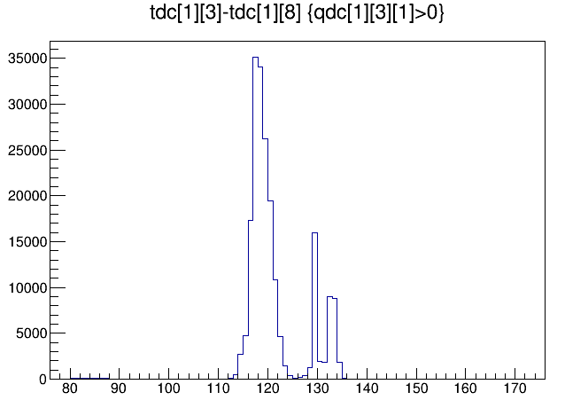
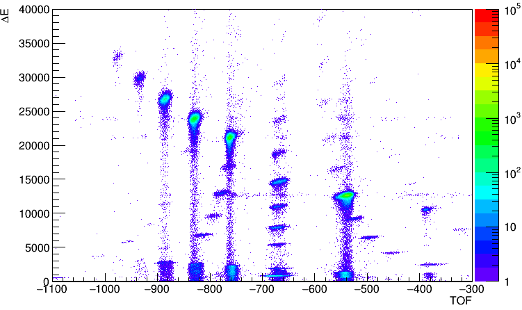

TOF measurement in 100M¶
The time-of-flight measurements is a basic requirement in nuclear physics experiments. In the digital acquisition system, the intrinsic time resolution of the 100M module is about 100-200 ps, the 250M module is about 40ps, and the 500M module is about 20ps. When the sampling rate is not enough to directly measure the time-of-flight, the TOF information needs to be converted to the TAC signal first, and the time information is expressed by the amplitude of the TAC. The following shows how to achieve high-precision time-of-flight measurements with the 100M module.
TAC signal characteristics¶
The TOF signal is converted to a wave with a width of 2 us as shown in the figure below, and its height indicates the time-of-flight.
XIA slow filter calculation energy is suitable for single exponential falling waveform, the TAC signal cannot give accurate height value by energy filter algorithm
- Therefore, the QDC method is used here. Trigger point before 2 us is the starting point of QDC integration, and each 500 ns is an integration time window, for a total of 8 integration time windows.
pre-trigger 2 us, all QDCs gate width 0.5 us
- Using the integral value difference of the two integral windows indicated by the blue arrow as the time-of-flight
TOF = QDC[6]-QDC[1] (QDC[0], QDC[1],…,QDC[7])
The above parameters are a set of parameters we measured, which gives a time resolution comparable to CAEN V1290. This set of parameters avoids the rising portion of the waveform and the reflection peak near the sampling point 150.
Experimental results(2017 RIBLL)¶
The following figure shows the time difference between the TAC signal and the silicon detector (10 ns/channel). We can find that there is a delay in the TAC signal output, and this delay is related to the TAC range we selected. Please pay attention to the time difference when reconstructing the event.
The figure below shows the experimentally measured TOF-DeltaE spectrum. The time-of-flight is derived from two thin plastic scintillation detectors, and DeltaE is from a silicon detector.
